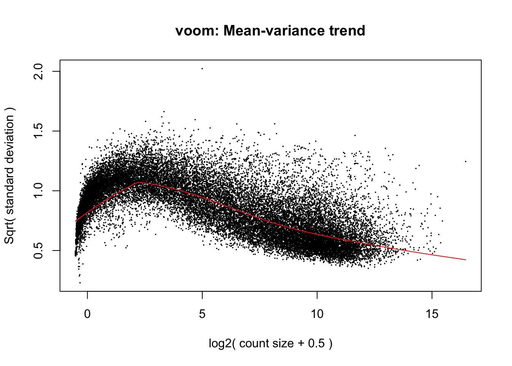
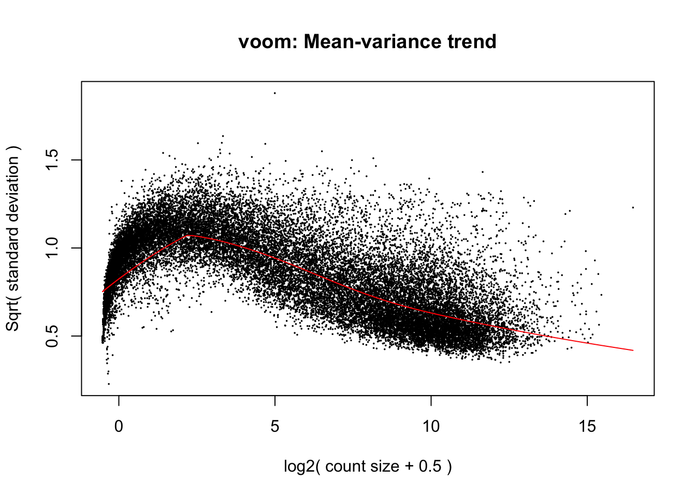
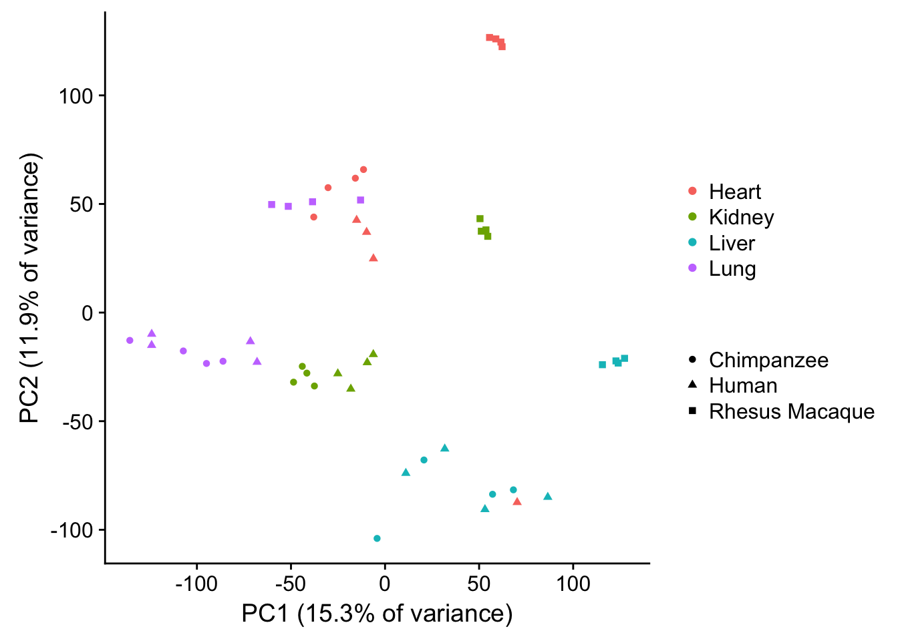
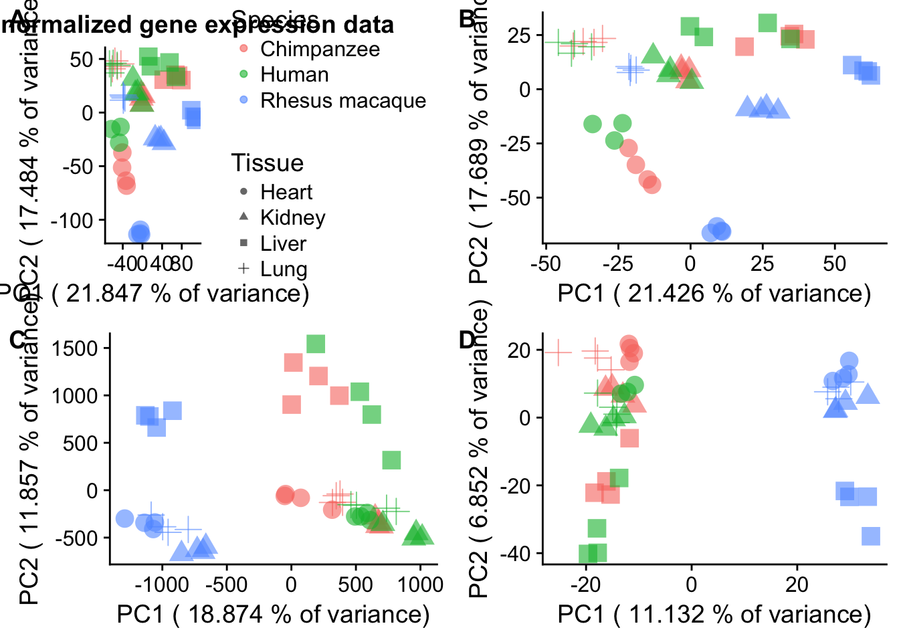

This is to make a supplementary figure for the information about the humans and the chimpanzees.
library("ggplot2")
library("edgeR")Loading required package: limmalibrary("limma")
source("functions.R")
library("RColorBrewer")
library("cowplot")
Attaching package: 'cowplot'The following object is masked from 'package:ggplot2':
ggsavecolors <- colorRampPalette(c(brewer.pal(9, "Blues")[1],brewer.pal(9, "Blues")[9]))(100)
pal <- c(brewer.pal(9, "Set1"), brewer.pal(8, "Set2"), brewer.pal(12, "Set3"))
#Load the data
#Raw counts
getwd()[1] "/Users/laurenblake/Desktop/Regulatory_Evol/ashlar-trial/analysis"counts_genes <- read.delim("../../../Reg_Evo_Primates/data/counts_genes.txt")
samples <- read.delim("../../../Reg_Evo_Primates/data/Sample_info_RNAseq_limma.txt")
labels <- paste(samples$Species, samples$Tissue, sep=".")
# Set expression cutoff and sample number
expr_cutoff <- 1.5
sample_number <- 24
# log2(CPM) adjusted for library sizes
dge_original <- DGEList(counts=as.matrix(counts_genes), genes=rownames(counts_genes), group = as.character(t(labels)))
dge_original <- calcNormFactors(dge_original)
cpm <- cpm(dge_original, normalized.lib.sizes=TRUE, log=TRUE, prior.count = 0.25)
design <- model.matrix(~ samples$Tissue*samples$Species)
# Voom with individual as a random variable
cpm.voom.cyclic <- voom(dge_original, design, normalize.method="cyclicloess", plot=T)
#corfit <- duplicateCorrelation(cpm.voom.cyclic, design, block=samples$Individual)
corfit.correlation <- 0.125862
cpm.voom.cyclic.48 <- voom(dge_original, design, normalize.method="cyclicloess", plot=TRUE, block=samples$Individual, correlation=corfit.correlation)
pca_genes <- prcomp(t(cpm.voom.cyclic.48$E) , scale = T, center = TRUE)
matrixpca <- pca_genes$x
pc1 <- matrixpca[,1]
pc2 <- matrixpca[,2]
pc3 <- matrixpca[,3]
pc4 <- matrixpca[,4]
pc5 <- matrixpca[,5]
pcs <- data.frame(pc1, pc2, pc3, pc4, pc5)
summary <- summary(pca_genes)
#dev.off()
plot.pca.true <- ggplot(data=pcs, aes(x=pc1, y=pc2, shape=as.factor(samples$Species), color=as.factor(samples$Tissue))) + geom_point(alpha = 1) + xlab("PC1 (15.3% of variance)") + ylab("PC2 (11.9% of variance)") + guides(color = guide_legend(order=1), size = FALSE, shape = guide_legend(order=3))
plot.pca.true <- plot.pca.true + theme(legend.position = "right") + scale_shape_discrete(name = c(""), breaks = c("Chimp", "Human", "Rhesus"), labels = c("Chimpanzee", "Human", "Rhesus Macaque")) + scale_color_discrete(name = c(""), breaks = c("heart", "kidney", "liver", "lung"), labels = c("Heart", "Kidney", "Liver", "Lung"))
plot.pca.true
plot.pca.true# Extract color legend
#leg1 <- gtable_filter(ggplot_gtable(ggplot_build(plot.pca.true)), "guide-box")
# Extract size legend
#plot.pca.size <- ggplot(data=pcs, aes(x=pc1, y=pc2, size=2)) + geom_point(aes(shape=as.factor(samples$Tissue))) + xlab(paste("PC1 (",(summary$importance[2,1]*100), "% of variance)")) + ylab(paste("PC2 (",(summary$importance[2,2]*100), "% of variance)")) + guides(color = guide_legend(order=1), size = FALSE, shape = guide_legend(order=3)) + scale_shape_discrete(name = c("Tissue "), breaks = c("heart", "kidney", "liver", "lung"), labels = c("Heart", "Kidney", "Liver", "Lung")) + ggtitle("PCA of normalized gene expression data (48 samples)") + theme(legend.position = "top")
#leg2 <- gtable_filter(ggplot_gtable(ggplot_build(plot.pca.size)), "guide-box")
# Draw with no legend
#plot.pca.no.legend <- ggplot(data=pcs, aes(x=pc1, y=pc2, color=as.factor(samples$Species), shape=as.factor(samples$Tissue), size=2)) + geom_point(alpha = 0.6) + xlab(paste("PC1 (",(summary$importance[2,1]*100), "% of variance)")) + ylab(paste("PC2 (",(summary$importance[2,2]*100), "% of variance)")) + guides(color = guide_legend(order=1), size = FALSE, shape = guide_legend(order=3)) + theme(legend.position = "none")
#plotNew <- arrangeGrob(leg1, leg2, plot.pca.no.legend,
# heights = unit.c(leg1$height, leg2$height, unit(1, "npc") - 2*leg1$height), ncol = 1)
#plotNew <- arrangeGrob(plot.pca.no.legend, leg1, leg2,
# heights = unit.c(unit(1, "npc") - 2*leg1$height, leg1$height,leg1$height), ncol = 1)
#grid.newpage()
#grid.draw(plotNew)
#plot.pca.no.legend <- ggplot(data=pcs, aes(x=pc1, y=pc2, color=as.factor(samples$Species), shape=as.factor(samples$Tissue), size=2)) + geom_point(alpha = 0.6) + xlab(paste("PC1 (",(summary$importance[2,1]*100), "% of variance)")) + ylab(paste("PC2 (",(summary$importance[2,2]*100), "% of variance)")) + guides(color = guide_legend(order=1), size = FALSE, shape = guide_legend(order=3)) + theme(legend.position = "none")
#plot.pca.true <- ggplot(data=pcs, aes(x=pc1, y=pc2, color=as.factor(samples$Species), shape=as.factor(samples$Tissue), size=2)) + geom_point(alpha = 0.6) + xlab(paste("PC1 (",(summary$importance[2,1]*100), "% of variance)")) + ylab(paste("PC2 (",(summary$importance[2,2]*100), "% of variance)")) + guides(color = guide_legend(order=1), size = FALSE, shape = guide_legend(order=3))
#plot.pca.true <- plot.pca.true + scale_color_discrete(name = c("Species"), breaks = c("Chimp", "Human", "Rhesus"), labels = c("Chimpanzee", "Human", "Rhesus macaque"))
#plot.pca.true <- plot.pca.true + scale_shape_discrete(name = c("Tissue"), breaks = c("heart", "kidney", "liver", "lung"), labels = c("Heart", "Kidney", "Liver", "Lung")) + ggtitle("Normalized gene expression data PCA (n = 48)")
#plot.pca.truep2 <- ggdraw()+draw_image("/Users/laurenblake/Dropbox/primate_BS-seq_project/Figures/Figure_S…_Irene_GATK_rnaSeq.pdf")
#p3 <- ggdraw()+draw_image("/Users/laurenblake/Dropbox/primate_BS-seq_project/Figures/Figure_S…_PCA_RNAseq_ALLchimps.pdf")
make_fig2 <- plot_grid(plot.pca.true, p2, labels = c("2A.", "2B."), ncol = 1)
save_plot("/Users/laurenblake/Dropbox/Tissue_paper/Supplement/Figures/fig2.pdf", make_fig2,
ncol = 1, # we're saving a grid plot of 2 columns
nrow = 2, # and 2 rows
# each individual subplot should have an aspect ratio of 1.3
base_aspect_ratio = 1.3
)4 figure panel with PCA of RNA expression and methylation for global survey and just what we used
# Load data
## Load counts
getwd()[1] "/Users/laurenblake/Desktop/Regulatory_Evol/ashlar-trial/analysis"cpm_12184 <- read.delim("../../../Reg_Evo_Primates/data/PC_cpm_cyclic_loess_random_var_gene_exp")
## RNA-seq
sample_info_RNAseq <- read.csv("../../../Reg_Evo_Primates/data/Sample_info_RNAseq.csv")
sample_features <- sample_info_RNAseq[-17,]
pca_genes <- prcomp(t(cpm_12184) , scale = T, center = TRUE)
#pca_genes <- prcomp(t(cpm_12184) , scale = F, center = TRUE)
matrixpca <- pca_genes$x
pc1 <- matrixpca[,1]
pc2 <- matrixpca[,2]
pc3 <- matrixpca[,3]
pc4 <- matrixpca[,4]
pc5 <- matrixpca[,5]
pcs <- data.frame(pc1, pc2, pc3, pc4, pc5)
summary <- summary(pca_genes)
#dev.off()
plot.pca.true <- ggplot(data=pcs, aes(x=pc1, y=pc2, color=as.factor(sample_features$Species), shape=as.factor(sample_features$Tissue), size=2)) + geom_point(alpha = 0.6) + xlab(paste("PC1 (",(summary$importance[2,1]*100), "% of variance)")) + ylab(paste("PC2 (",(summary$importance[2,2]*100), "% of variance)")) + guides(color = guide_legend(order=1), size = FALSE, shape = guide_legend(order=3))
plot.pca.true <- plot.pca.true + theme(legend.position = "right") + scale_color_discrete(name = c("Species"), breaks = c("chimpanzee", "human", "rhesus macaque"), labels = c("Chimpanzee", "Human", "Rhesus macaque"))
plot.pca.true <- plot.pca.true + scale_shape_discrete(name = c("Tissue"), breaks = c("heart", "kidney", "liver", "lung"), labels = c("Heart", "Kidney", "Liver", "Lung")) + ggtitle("PCA of normalized gene expression data")pca_all_methyl_samples <- read.csv("../data/pca_all_methyl_samples.txt", sep="")
pca_summary_all_methyl_samples <- read.csv("../data/pca_summary_all_methyl_samples.txt", sep="")
matrixpca <- pca_all_methyl_samples
pc1 <- matrixpca[,1]
pc2 <- matrixpca[,2]
pc3 <- matrixpca[,3]
pc4 <- matrixpca[,4]
pc5 <- matrixpca[,5]
pcs <- data.frame(pc1, pc2, pc3, pc4, pc5)
summary <- pca_summary_all_methyl_samples
#dev.off()
plot.pca.methyl <- ggplot(data=pcs, aes(x=pc1, y=pc2, color=as.factor(samples$Species), shape=as.factor(samples$Tissue), size=2)) + geom_point(alpha = 0.6) + xlab(paste("PC1 (",(summary[2,1]*100), "% of variance)")) + ylab(paste("PC2 (",(summary[2,2]*100), "% of variance)")) + guides(color = guide_legend(order=1), size = FALSE, shape = guide_legend(order=3)) + theme(legend.position = "none")check_methyl <- read.csv("../../../Reg_Evo_Primates/data/250_exp_avg_methyl_hcr_4155_genes.txt", sep="")
express <- check_methyl[,2:48]
methyl <- check_methyl[,49:95]
# PCA for RNA seq
pca_genes <- prcomp(t(express) , scale = T, center = TRUE)
#pca_genes <- prcomp(t(cpm_12184) , scale = F, center = TRUE)
matrixpca <- pca_genes$x
pc1 <- matrixpca[,1]
pc2 <- matrixpca[,2]
pc3 <- matrixpca[,3]
pc4 <- matrixpca[,4]
pc5 <- matrixpca[,5]
pcs <- data.frame(pc1, pc2, pc3, pc4, pc5)
summary <- summary(pca_genes)
#dev.off()
plot.rna.integ <- ggplot(data=pcs, aes(x=pc1, y=pc2, color=as.factor(sample_features$Species), shape=as.factor(sample_features$Tissue), size=2)) + geom_point(alpha = 0.6) + xlab(paste("PC1 (",(summary$importance[2,1]*100), "% of variance)")) + ylab(paste("PC2 (",(summary$importance[2,2]*100), "% of variance)")) + guides(color = guide_legend(order=1), size = FALSE, shape = guide_legend(order=3)) + theme(legend.position = "none")
# PCA for methylation
pca_genes <- prcomp(t(methyl) , scale = T, center = TRUE)
matrixpca <- pca_genes$x
pc1 <- matrixpca[,1]
pc2 <- matrixpca[,2]
pc3 <- matrixpca[,3]
pc4 <- matrixpca[,4]
pc5 <- matrixpca[,5]
pcs <- data.frame(pc1, pc2, pc3, pc4, pc5)
summary <- summary(pca_genes)
#dev.off()
plot.methyl.integ <- ggplot(data=pcs, aes(x=pc1, y=pc2, color=as.factor(sample_features$Species), shape=as.factor(sample_features$Tissue), size=2)) + geom_point(alpha = 0.6) + xlab(paste("PC1 (",(summary$importance[2,1]*100), "% of variance)")) + ylab(paste("PC2 (",(summary$importance[2,2]*100), "% of variance)")) + guides(color = guide_legend(order=1), size = FALSE, shape = guide_legend(order=3)) + theme(legend.position = "none")
# Re run with just humans and chimpanzees
# PCA for methylation
pca_genes <- prcomp(t(methyl[,1:31]) , scale = T, center = TRUE)
matrixpca <- pca_genes$x
pc1 <- matrixpca[,1]
pc2 <- matrixpca[,2]
pc3 <- matrixpca[,3]
pc4 <- matrixpca[,4]
pc5 <- matrixpca[,5]
pcs <- data.frame(pc1, pc2, pc3, pc4, pc5)
summary <- summary(pca_genes)
#dev.off()
pal[1:2][1] "#E41A1C" "#377EB8"plot.methyl.integ.hc <- ggplot(data=pcs, aes(x=pc1, y=pc2, fill=as.factor(sample_features$Species[1:31]), shape=as.factor(sample_features$Tissue[1:31]), size=2)) + geom_point(alpha = 0.6) + xlab(paste("PC1 (",(summary$importance[2,1]*100), "% of variance)")) + ylab(paste("PC2 (",(summary$importance[2,2]*100), "% of variance)")) + guides(color = guide_legend(order=1), size = FALSE, shape = guide_legend(order=3)) + theme(legend.position = "none") + scale_fill_manual(values=c("#E41A1C","#377EB8", "#4DAF4A"))
plot_grid(plot.pca.true, plot.rna.integ, plot.pca.methyl, plot.methyl.integ, labels = c("A", "B", "C", "D"), ncol = 2)